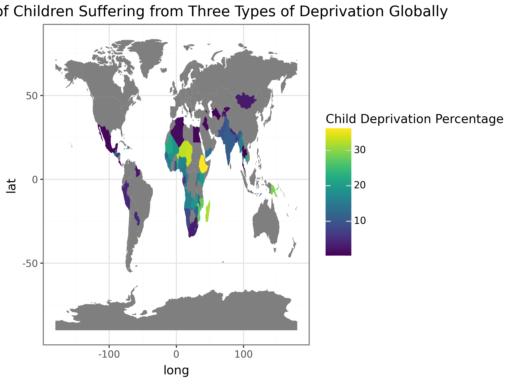
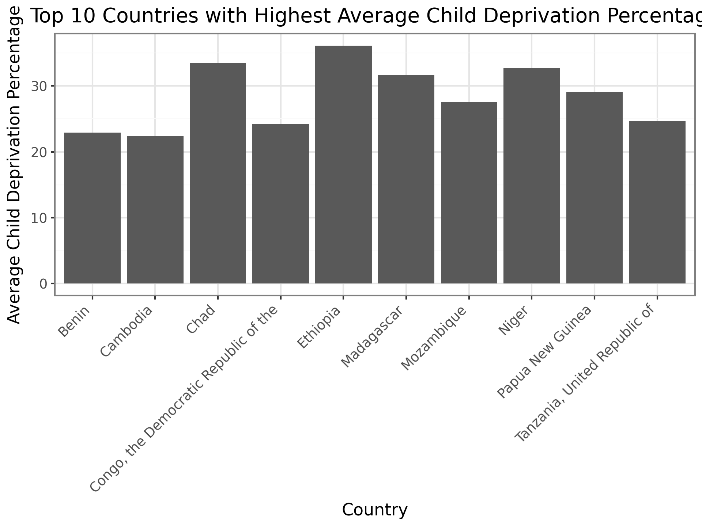
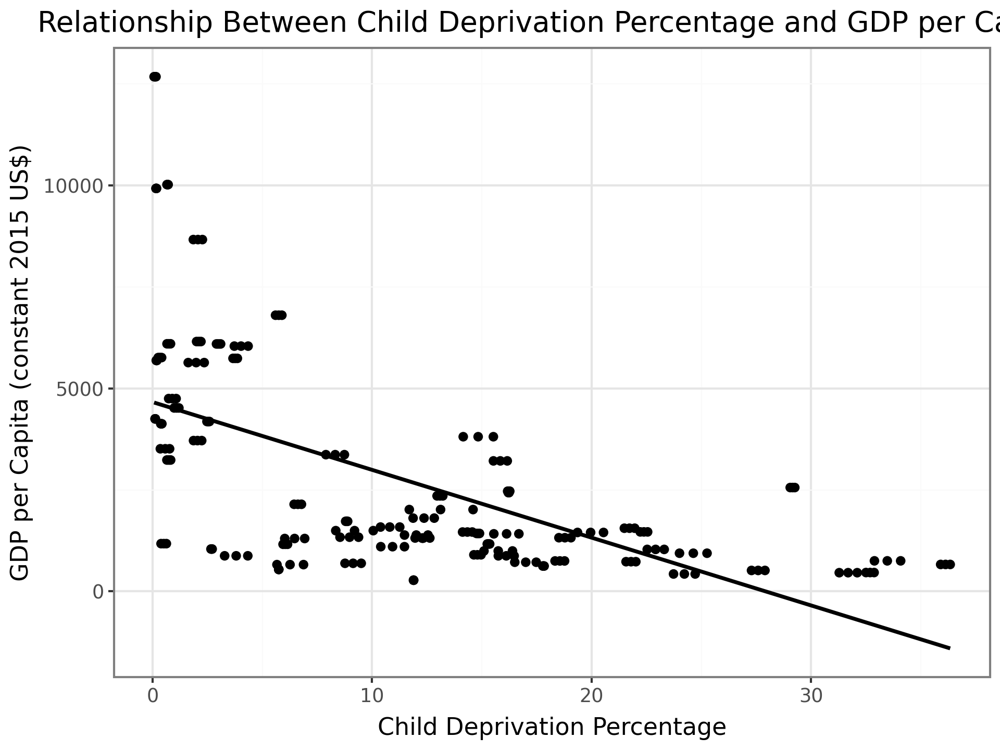
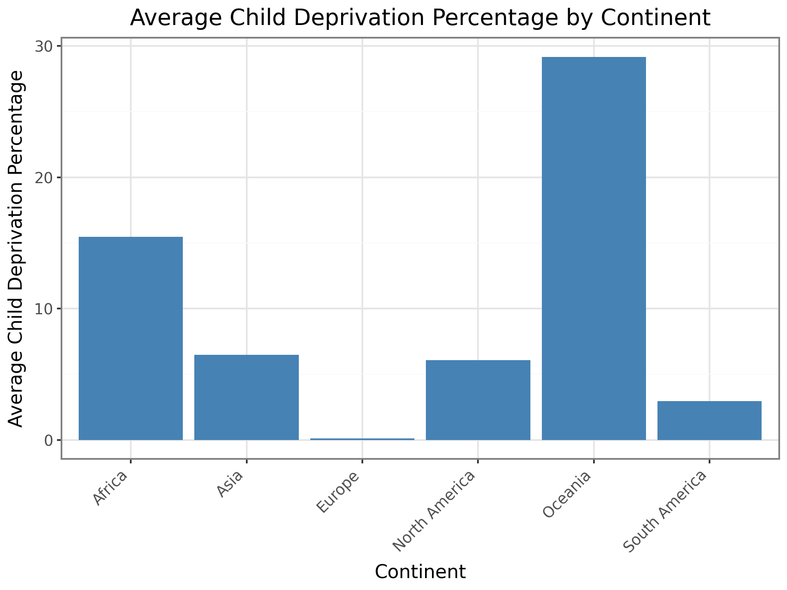
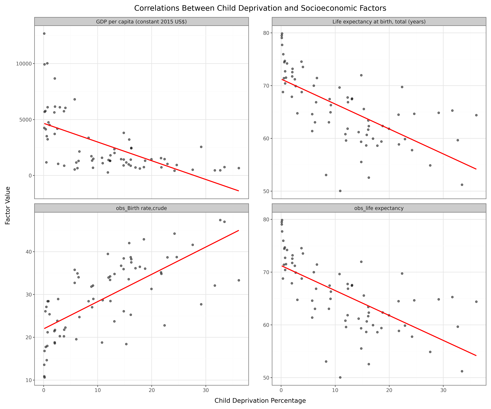
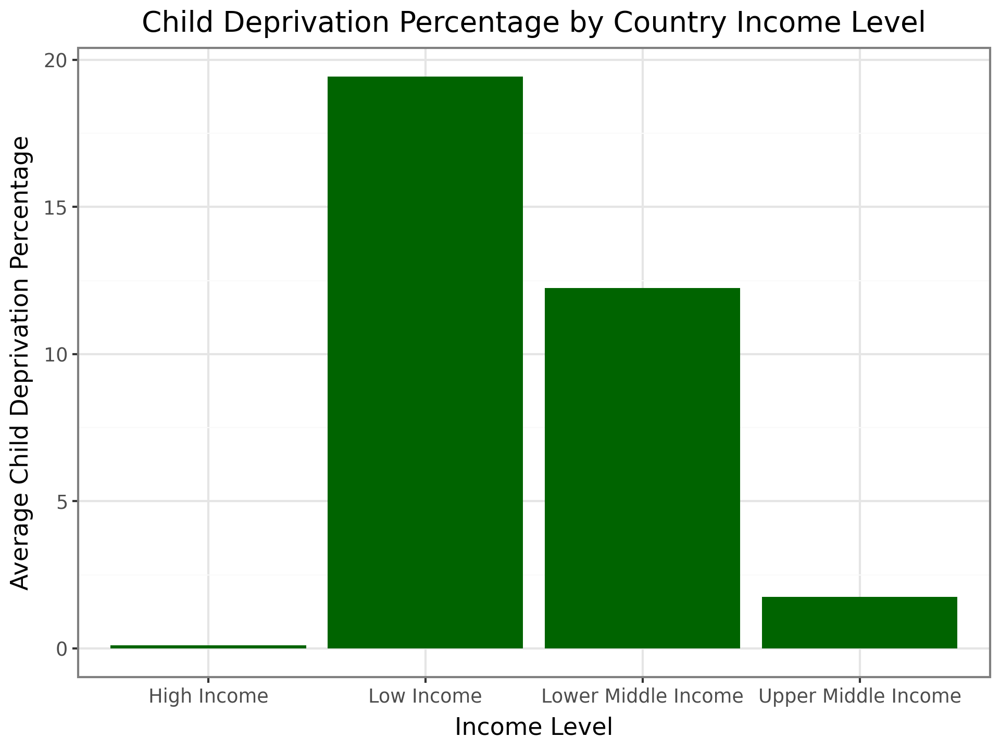
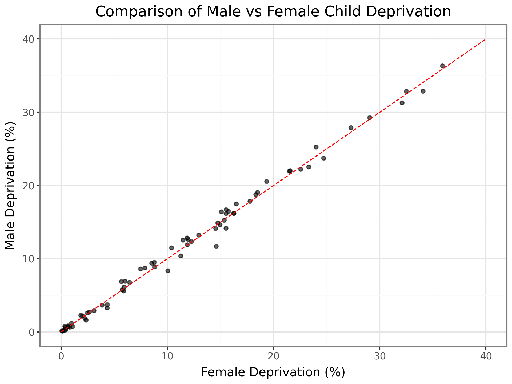
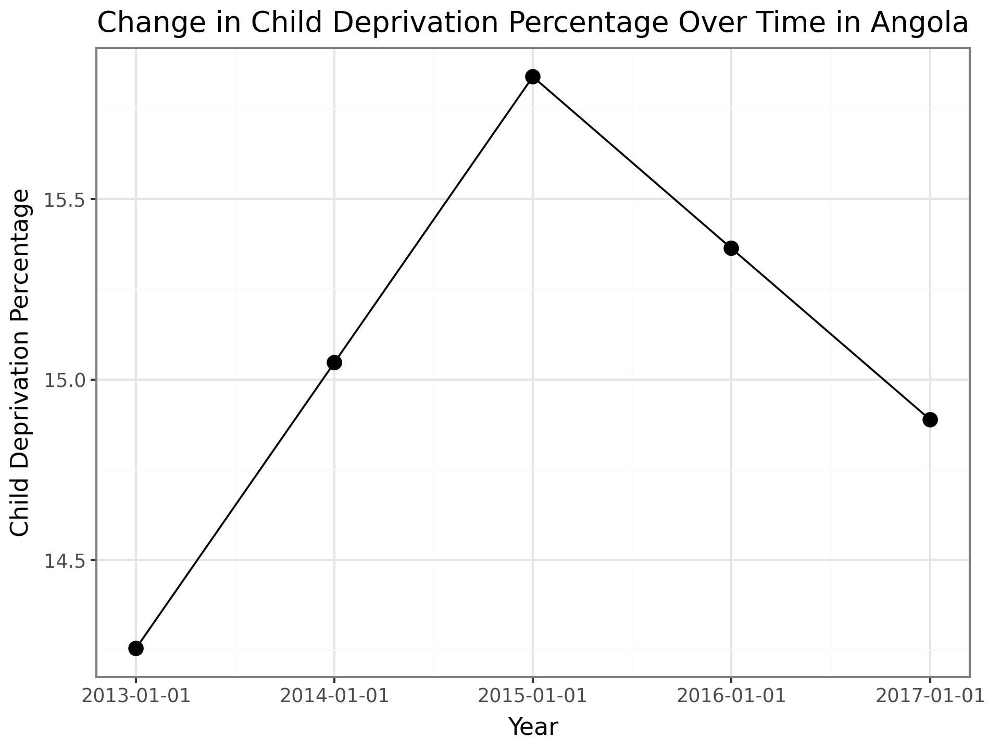

Global Analysis of Child Deprivation - UNICEF Data
This analysis examines UNICEF data on the percentage of children suffering from exactly three types of deprivation, using homogeneous moderate standards. We explore geographical patterns, socioeconomic correlations, gender differences, and temporal trends to understand the global situation of child deprivation.
1. Global Distribution of Child Deprivation
The world map shows the geographical distribution of child deprivation. African countries generally show higher rates, while developed nations in North America and Europe have significantly lower percentages.
2. Countries with Highest Child Deprivation
The bar chart highlights the top 10 countries with the highest average percentage of children suffering from three types of deprivation. Most of these countries are in Africa and face significant economic challenges.
3. Relationship with GDP per Capita
The scatter plot reveals a strong negative correlation between GDP per capita and child deprivation rates. Countries with higher economic output generally have lower percentages of children suffering from deprivation.
4. Regional Analysis
This analysis shows average child deprivation rates by continent. Africa has the highest rates, followed by Asia, while Europe and the Americas have substantially lower rates.
5. Correlation with Socioeconomic Factors
The correlation analysis reveals how child deprivation relates to various socioeconomic indicators. There are strong negative correlations with GDP and life expectancy, and positive correlations with birth rates.
6. Analysis by Income Level
This chart categorizes countries by income level and shows the clear relationship between national income and child deprivation. Low-income countries have significantly higher rates of child deprivation compared to high-income nations.
7. Gender Analysis
This analysis compares deprivation rates between male and female children. While most countries show similar rates across genders, some notable differences exist, potentially indicating gender-based disparities in access to resources and services.
8. Trends Over Time

This chart tracks changes in child deprivation over time for selected countries. While some countries have made significant progress in reducing deprivation, others have seen stagnation or even increases.
9. Case Study: Angola
This time series focuses on Angola as a case study, showing how child deprivation has changed over time. Factors such as policy changes, economic development, and social programs can significantly impact child welfare indicators.
Key Findings:
- Strong negative correlation between economic development and child deprivation
- Geographic concentration of high deprivation rates in Africa and parts of Asia
- Minimal gender differences in most countries, though some exceptions exist
- Positive progress over time in many countries, though at varying rates
- Multiple socioeconomic factors correlate with child deprivation, suggesting complex causality